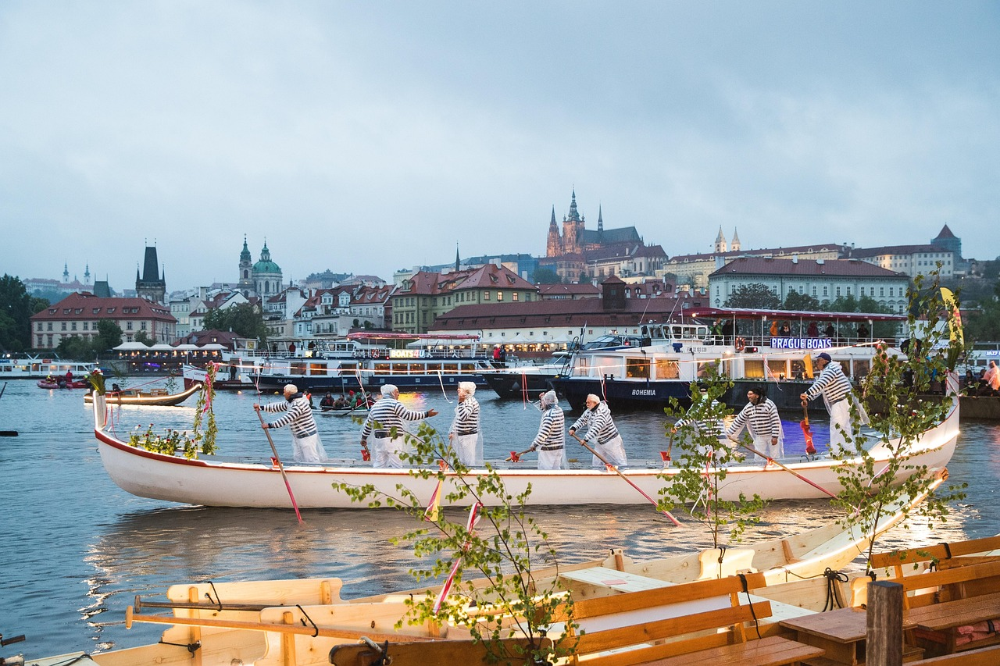
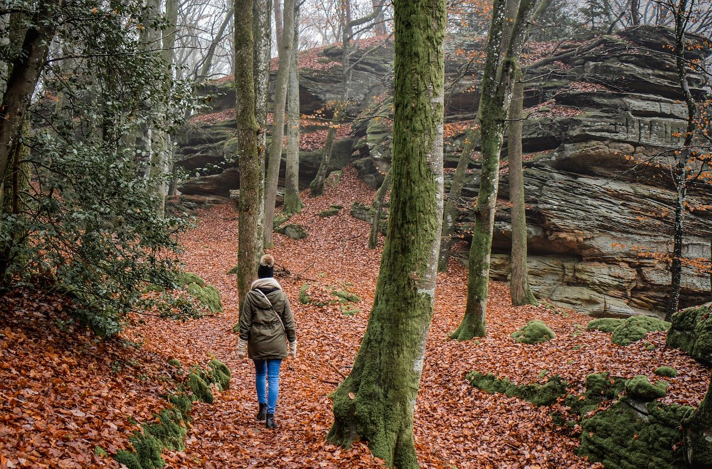

Lugares Turísticos Destacados
- Mirador del Sol: Ideal para ver el atardecer sobre las montañas, con áreas para picnic y senderos señalizados.
- Lago Cristalino: Un lago natural perfecto para paseos en bote, pesca deportiva y fotografía de aves.
- Centro Histórico: Calles empedradas, arquitectura colonial, museos y cafés con encanto local.
- Parque Botánico: Un recorrido por la flora autóctona, con visitas guiadas y zonas de descanso.
Gastronomía Local
Disfruta de sabores auténticos como:
- Empanadas de maíz: Rellenas con queso y carne especiada, cocidas al horno de barro.
- Trucha al horno: Plato típico de los ríos locales, servido con papas rústicas y ensalada criolla.
- Dulce de membrillo: Postre artesanal muy popular, acompañado de queso fresco.
- Locro serrano: Un guiso tradicional con maíz, porotos, carne de cerdo y zapallo.
Festividades y Eventos
Conoce las tradiciones más importantes:
- Festival de la Luna: Cada febrero, con música, danzas tradicionales, puestos de comida y espectáculos nocturnos.
- Feria del Campo: Celebrada en julio, reúne productos artesanales, comidas típicas, juegos tradicionales y música en vivo.
- Semana Cultural: Una semana de exposiciones artísticas, teatro al aire libre y talleres comunitarios.

Actividades al Aire Libre
Vive la naturaleza con estas emocionantes opciones:
- Senderismo: Rutas señalizadas para todos los niveles, con vistas panorámicas y avistamiento de fauna.
- Ciclismo de montaña: Alquiler de bicicletas y circuitos entre bosques y caminos rurales.
- Cabalgatas guiadas: Recorre paisajes únicos acompañado por guías locales.
- Parapente: Vuelos biplaza desde las alturas para los más aventureros.
